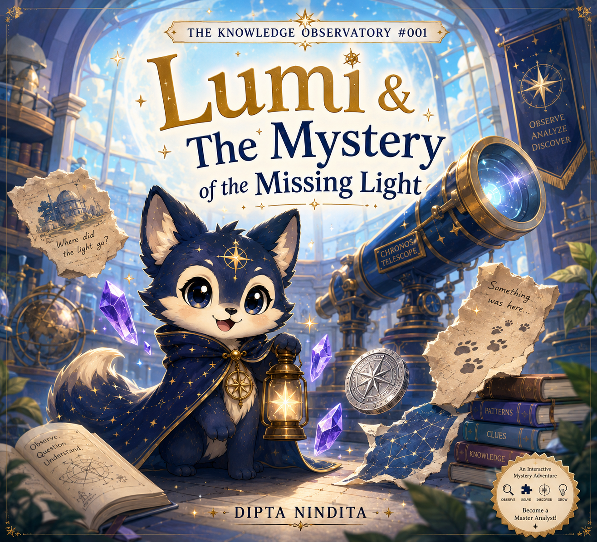
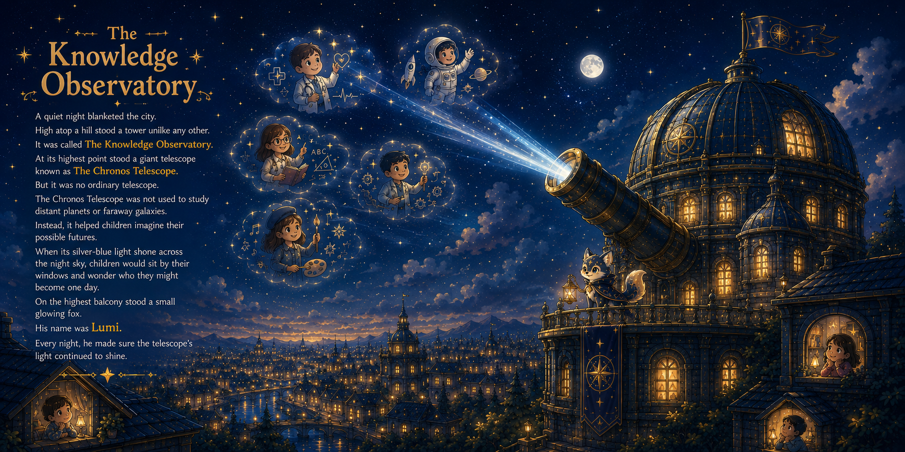
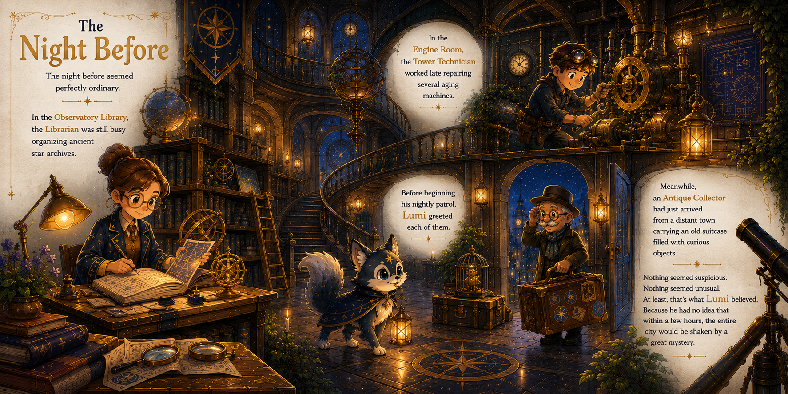
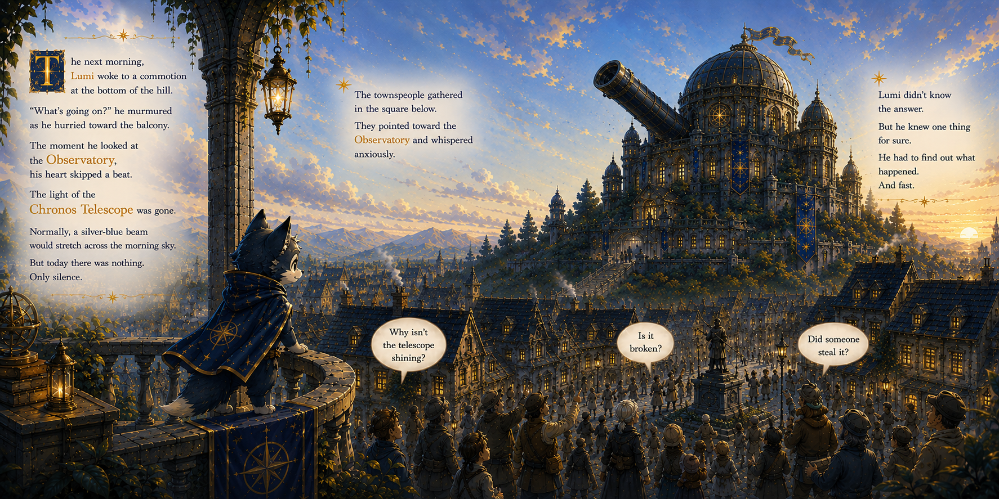
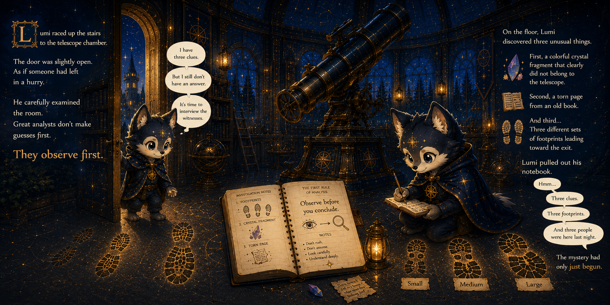

Every great discovery begins with a question.

When the light of the Chronos Telescope suddenly disappears, the entire Observatory is thrown into confusion.
Fortunately, Lumi is on the case.
Armed with a notebook, a lantern, and a curious mind, Lumi begins searching for clues. Strange footprints, a torn page, glowing symbols, and hidden codes lead him deeper into a mystery that no one else seems able to solve.
But Lumi can't do it alone.
Young readers will join the investigation, solve interactive puzzles, discover patterns, and help uncover the truth behind the missing light.
An interactive adventure designed to encourage curiosity, observation, and analytical thinking.
Inside this book, children will:
✓ Follow clues and solve mysteries alongside Lumi
✓ Complete interactive observation and pattern-recognition quests
✓ Practice analytical thinking and problem-solving skills
✓ Discover that mistakes can become valuable lessons
✓ Earn their Master Analyst Badge at the end of the adventure
Perfect for curious minds ages 6–10 who love puzzles, mysteries, and imaginative stories.
Explore the beginning of Lumi's mystery before opening the full adventure.




Join Lumi inside the Knowledge Observatory and become a Master Analyst.
Get the Book